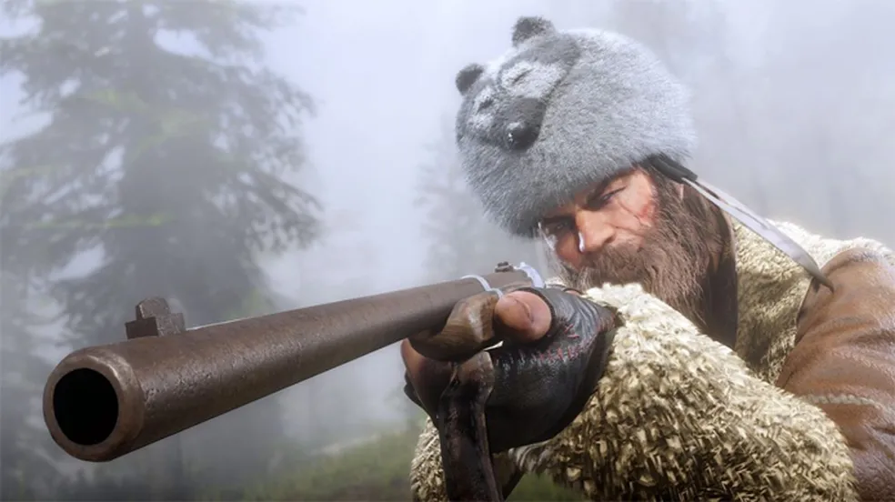
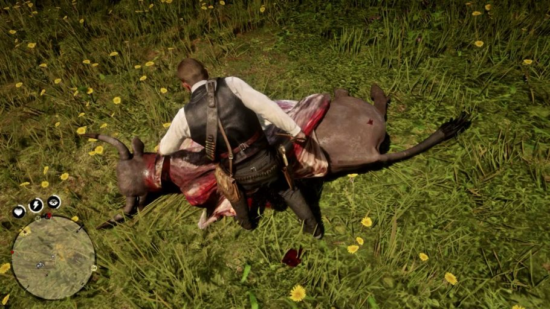

Atividades no Mundo de Red Dead Redemption 2


Em Red Dead Redemption 2, as atividades não se limitam a missões principais. Os jogadores podem caçar, pescar, explorar e até participar de eventos aleatórios que ocorrem no vasto mundo aberto do jogo. Além disso, há sempre algo novo para descobrir a cada esquina, com o mundo sendo dinâmico e reativo às ações do jogador.
Caça
A caça é uma das atividades mais populares, com diversos tipos de animais para capturar. Desde caçar grandes predadores até pegar pequenos animais para peles e carne, a caça é essencial para sobreviver no mundo selvagem.
Pesca
A pesca também é uma excelente forma de relaxamento, onde você pode pescar em rios e lagos do jogo. Cada tipo de peixe tem suas preferências de habitat, por isso explorar diferentes locais é fundamental para ter sucesso.
Eventos Aleatórios
No mundo aberto, eventos aleatórios podem ocorrer a qualquer momento. Desde resgatar uma pessoa em perigo até participar de confrontos com bandidos, o mundo está sempre oferecendo novas oportunidades para os jogadores.
Animais em Red Dead Redemption 2
Em Red Dead Redemption 2, a fauna é extremamente rica e diversificada. Cada animal oferece uma experiência única, seja na caça, seja na exploração do mundo aberto. Aqui estão alguns dos principais tipos de animais encontrados no jogo:
Mamíferos
Os mamíferos são abundantes no jogo e oferecem uma variedade de recursos. Veja alguns dos mais notáveis:
- Veado: Encontrado principalmente em florestas e áreas de campo. Suas peles são valiosas para crafting.
- Urso: Um dos animais mais temidos e difíceis de caçar. Suas peles são raras e podem ser usadas para itens valiosos.
- Lobo: Esses caçadores ferozes podem ser encontrados em grupos e representam um grande desafio para os caçadores.
Peixes
A pesca é uma atividade relaxante e lucrativa no jogo, com diversos tipos de peixes. Alguns exemplos:
- Truta: Uma excelente escolha para pesca em rios de alta montanha.
- Salmon: Encontrado em águas mais profundas, é um dos peixes mais valiosos.
Animais Raros
Red Dead Redemption 2 também possui animais raros que podem ser encontrados em locais secretos ou difíceis de acessar, como:
- Cervo Albino: Um dos animais mais raros, que pode ser encontrado em locais afastados da região de Big Valley.
- Bezerro de Ouro: Um animal lendário que exige uma caça habilidosa para ser capturado.